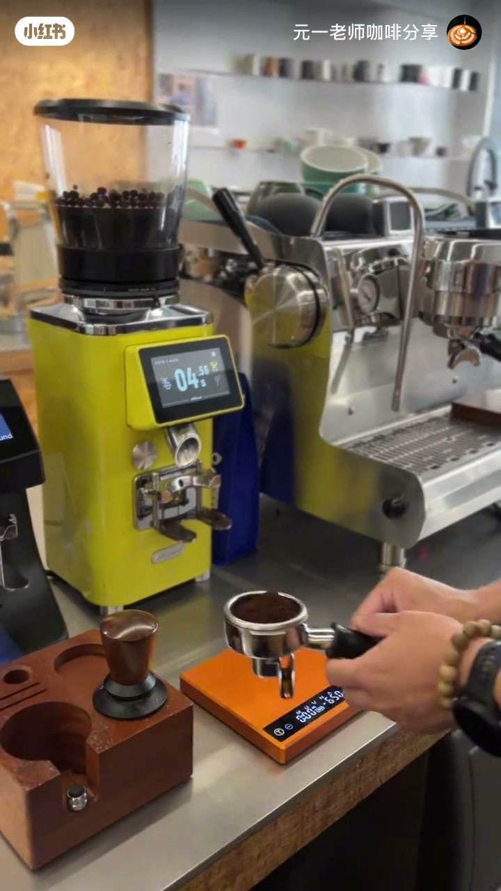
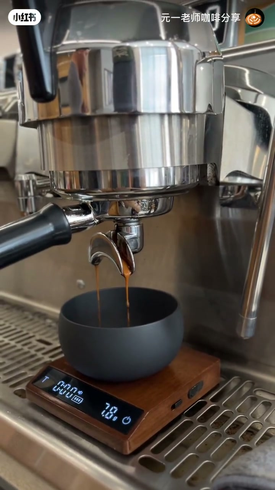
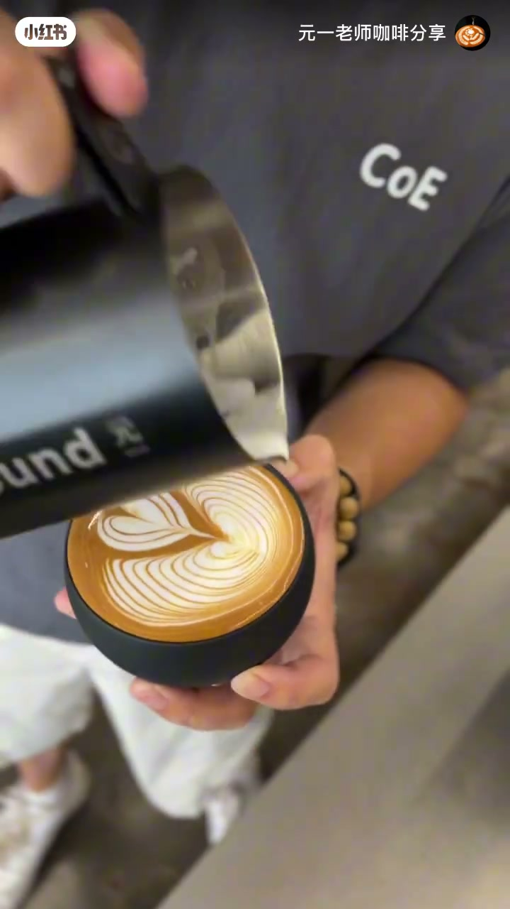
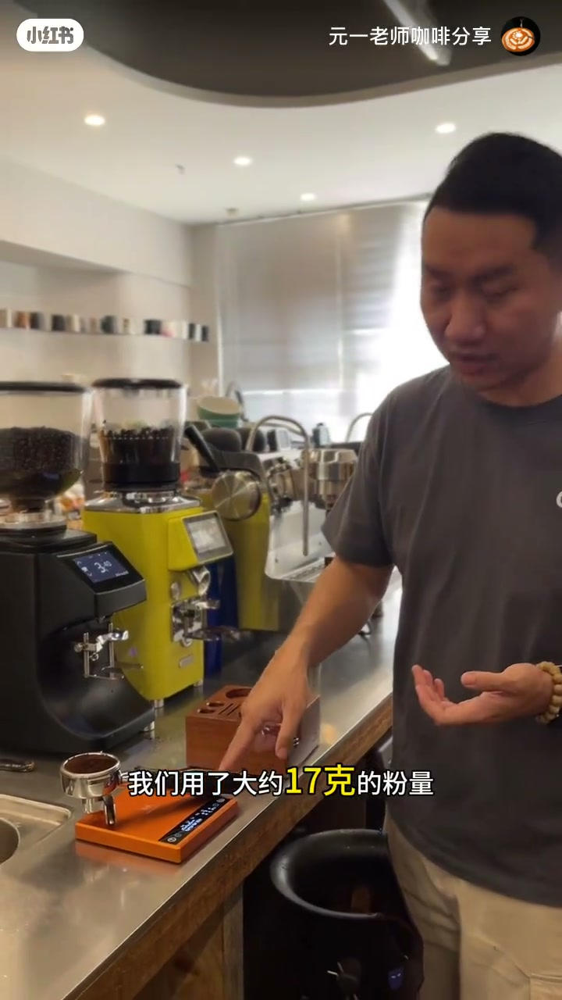
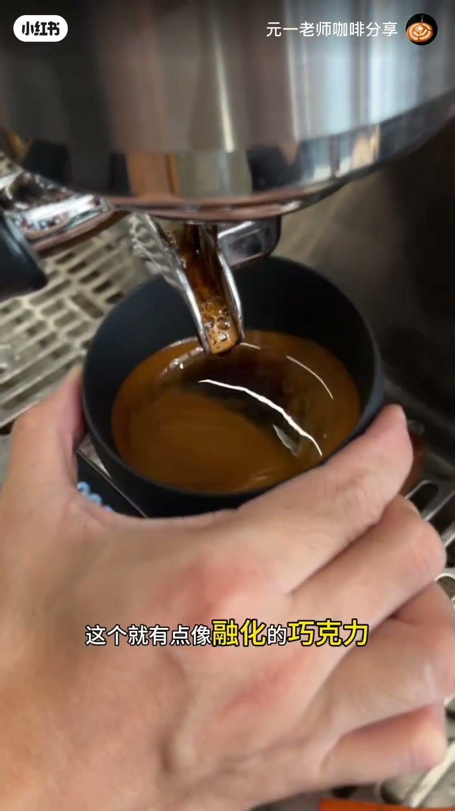
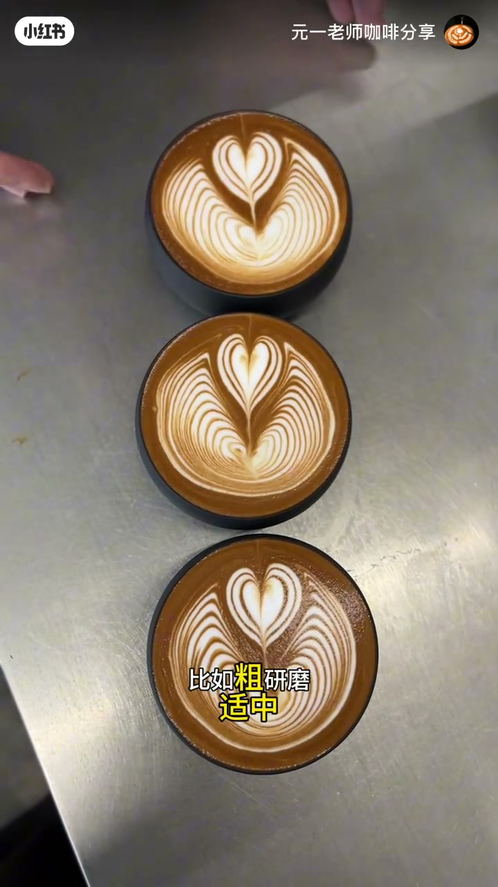

内容要点
咖啡拉花老师用三组对比实验，直观展示萃取浓度对拉花图案的影响。同样萃取20克咖啡液：14克粉的低浓度浓缩颜色浅、偏水，拉花图案轻微变形、带锯齿；17克粉浓度适中、流动性更好；20克粉的高浓度像融化的巧克力，图案最完整最丝滑、对比度最高。结论：拉花需要中高浓度——颜色更深、流动性更强。调节浓度的手段不止粉量，研磨度（粗/适中/正常）与萃取比例（完整/偏少/极短）都能达到相同效果。
知识结构
讲解浓度对拉花的影响：做三个不同流速——较快（低浓度）、正常、较慢（高浓度），观察拉花图案的直观差异。
14克粉萃20克液：颜色偏浅、比较水。拉花图案轻微变形、有锯齿状——浓缩偏酸、支撑力不够。
17克粉萃20克液：浓度明显增加，流动性更好。
20克粉萃20克液：像融化的巧克力。高浓度浓缩的图形最完整最丝滑，对比度非常高。
拉花需要中高浓度：颜色更深、流动性更强。调节浓度可用粉量、研磨度、萃取比例三种手段。
浓度决定拉花成败：低浓度（粉少流速快）图案变形带锯齿、偏酸无支撑；中高浓度（粉多流速慢）颜色深、流动性强、图案完整丝滑、对比度高。调节浓度三手段——粉量、研磨度、萃取比例，结果相同，可自行对比测试。
00:00-00:25实验设计：三个流速对应三种浓度
开场由仁义老师提出本节主题：萃取的部分对拉花的影响。聚焦在浓度这个变量上——「今天我们讲解的是关于浓度对拉花的影响」。
实验方案很清晰：做三个不同的流速——较快的流速对应低浓度、正常的流速、较慢的流速对应高的浓度，逐一观察对拉花图案的直观感受。

00:25-01:21低浓度：颜色浅、图案变形带锯齿
第一组做低浓度、少粉量的萃取。粉量偏少，「这个粉是没有装满粉碗的」，上秤称重只有 14 克，是偏少的粉量。同样萃取到 20 克咖啡液。
结果是「颜色偏浅，比较水」。拉花时能明显看到问题：「图案其实是有一些轻微的变形，而且会有一些锯齿状」。仁义老师点出原因：这是浓缩偏酸、以及支撑力不够的表现。低浓度浓缩没有足够厚度的咖啡油脂去承载奶泡，图案自然撑不完整。




01:21-01:51正常浓度：流动性更好
第二组做正常粉量，用大约 17 克的粉，同样萃取 20 克咖啡液。
「明显，浓度是有增加的。」同时能感受到 17 克的粉量流动性会更好一些。这是一个过渡对照，让观众在低与高之间建立浓度梯度的感知。

01:51-02:23高浓度：像融化的巧克力，图案最完美
最后一组用超级大的粉量，20 克的粉。萃取出来的浓缩「有点像融化的巧克力」——这个比喻非常形象，高浓度的浓缩质地厚重、顺滑、有光泽。
对比结果一目了然：「明显观察到高浓度的浓缩咖啡，整个图形是最完整、最丝滑的，而且它的对比度非常的高。」粉越多、萃取越浓，图案的表现力就越强。


02:23-02:59结论：拉花需要中高浓度
三杯放在一起对比：低浓度、适中和高浓度。结论明确——「对于拉花图案而言的话，我们是需要中高的浓度，它的颜色会更深，流动性会更强」。
关键在可操作性。仁义老师强调调节浓度不止粉量一种路径：「我们也可以通过调整研磨度，比如粗研磨、适中、正常的研磨」，还可以通过不同的萃取比例——完整的萃取、偏少的萃取、极短的萃取——来得到不同浓度。
「那么它对于拉花图案影响是非常之大的，大家可以去做一些测试。」最后以一句互动收尾：「今天关于浓度对于拉花的影响你学会了吗？」


完整转录（22段）
以下文本由 Whisper medium 模型自动转录，可能存在少量识别误差，已尽可能修正。
哈喽大家好 我是仁义老师 那么今天呢 给大家来讲解一下 就是萃取的部分对拉花的影响
那么今天我们讲解的是关于浓度对拉花的影响 我们做三个不同的流速 较快的流速 低浓度 正常的流速
还有较慢的流速 高的浓度 我说对于拉花图案的一些
直观上的感受 好 那现在跟随我一起来进行萃取
现在呢 来做一个低浓度少粉量的萃取
这个粉是没有装满粉碗的 我们去称一下它的重量
好 14克啊 这是一个偏少的粉量
我们兜脆到20克
颜色偏浅 比较水
可以看到图案呢 其实是有一些轻微的变形 而且会有一些锯齿状 这个是浓缩偏酸 以及支撑力不够的表现
现在我们来做个正常的粉量 我们用了大约17克的粉量 我们同样萃取20克咖啡液 明显 浓度是有增加的
能感受到17克的粉量呢 它的流动性会更好一些
最后我们来个超级大的粉量 用了20克的粉量
哇 这个就有点像融化的巧克力
好 明显观察到高浓度的浓缩咖啡 整个图形是最完整 最丝滑的 而且它的对比度非常的高
我们对比三杯 这是低浓度 适中和高浓度 那对于对流图案而言的话 我们是需要中高的浓度 它的颜色会更深 流动性会更强
那我们现在只是简单的通过粉量的方式来调节流速
我们也可以通过调整研磨度 比如粗研磨 适中 正常的研磨 也可以达到我们现在理想的效果
那再包括我们其实可以催出不同的催取比例
比如说一个完整的催取 一个偏少的催取 一个极短催 也可以得到不同的浓度
那么它对于对流图案影响是非常之大的 大家可以去做一些测试
那么今天关于蒙度对于拉高的影响你学会了吗